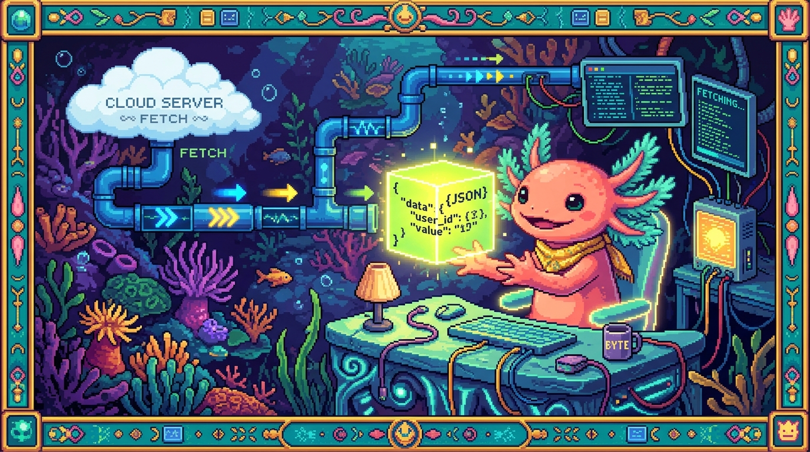

Capítulo 05 — Datos, JSON y fetch

Cerramos JavaScript con tres cosas que van de la mano: cómo se manejan colecciones de datos (listas y objetos), el formato JSON (el que usan PolyPaw y prácticamente todas las APIs) y cómo pedirle datos a internet con
fetch. Esto último es, ni más ni menos, lo que hace el chat con IA de tu sitio.
1. Arrays: listas de cosas
🟦 ¿Qué significa? — Array (arreglo / lista)
Un array es una lista ordenada de valores. Se escribe entre corchetes
[ ]y los valores van separados por comas. Te sirve para meter varias cosas dentro de una sola variable:javascript const servicios = ["Diseño web", "IA", "Marketing"]; const numeros = [10, 25, 4, 99];🟦 ¿Qué significa? — Índice (acceder a un elemento)
Cada elemento ocupa una posición numérica, su índice, y la cuenta empieza en 0:
javascript servicios[0] // "Diseño web" (el primero) servicios[2] // "Marketing" (el tercero) servicios.length // 3 (cuántos elementos hay)(¿Te acuerdas de que los bucles arrancaban en 0? Pues es por esto.)🟦 ¿Qué significa? — Métodos útiles de array
Los arrays vienen con "funciones incorporadas" (los métodos) que vas a usar todo el rato:
javascript servicios.push("SEO"); // añade al final servicios.includes("IA"); // true/false: ¿está en la lista? servicios.forEach((s) => { // ejecuta algo por cada elemento console.log(s); });forEaches básicamente un bucle, pero se lee mucho mejor: "para cada servicios, haz esto". Recorrer listas así lo vas a hacer todos los días en la web: mostrar productos, hábitos, mensajes y demás.
2. Objetos: datos con etiquetas
🟦 ¿Qué significa? — Objeto
Un objeto junta datos que están relacionados, pero en vez de posiciones usa etiquetas (las llamamos propiedades o claves). Va entre llaves
{ }:javascript const usuario = { nombre: "Edwar", edad: 25, activo: true };Cada par tiene la formaclave: valor. Si un array es "una fila de cosas", un objeto es más bien "una ficha con campos".🟦 ¿Qué significa? — Acceder a propiedades
Para llegar a un dato usas un punto seguido del nombre de la propiedad:
javascript usuario.nombre // "Edwar" usuario.edad // 25 usuario.edad = 26; // y también puedes cambiarlo💡 Tip — Arrays y objetos se combinan
En la práctica casi siempre los vas a mezclar: una lista de objetos. Los hábitos de RachaSimple o las misiones de PolyPaw, por ejemplo, son arrays de objetos:
javascript const habitos = [ { nombre: "Leer", hecho: true }, { nombre: "Ejercicio", hecho: false } ]; habitos[0].nombre // "Leer"
3. JSON: el idioma para intercambiar datos
🟦 ¿Qué significa? — JSON
JSON (JavaScript Object Notation) es un formato de texto para guardar e intercambiar datos. Toma prestada la forma de los objetos y arrays de JavaScript, y se ha convertido en el idioma estándar con el que las apps y los servidores se pasan información.
json { "nombre": "Edwar", "servicios": ["Diseño web", "IA"], "activo": true }Como ves, se parece muchísimo a un objeto de JavaScript. La diferencia que más conviene recordar: en JSON las claves van entre comillas dobles y dentro solo caben datos, nunca funciones. ¿Dónde aparece esto en tu proyecto? PolyPaw guarda TODAS sus misiones y la base de datos del usuario en archivos.json(missions/*.json,polypaw_db.json). Y cada vez que una web habla con una API, los datos van y vienen en JSON.🟦 ¿Qué significa? — Convertir entre texto JSON y objetos
Como JSON es texto, para trabajar con él en JavaScript tienes que convertirlo a objeto, y al revés: -
JSON.parse(texto)→ pasa de texto JSON a objeto de JavaScript (para poder usarlo). -JSON.stringify(objeto)→ pasa de objeto a texto JSON (para enviarlo o guardarlo).javascript const texto = '{"nombre":"Edwar"}'; const obj = JSON.parse(texto); // ahora obj.nombre es "Edwar" const otraVez = JSON.stringify(obj); // vuelve a texto
4. Pedir datos a internet: fetch y async/await
Aquí enlazamos con el Módulo 00: el navegador (el cliente) le pide datos a un servidor. En
JavaScript eso se hace con fetch.
🟦 ¿Qué significa? —
fetch(pedir/traer)
fetch(url)lanza una petición HTTP a una dirección y te trae de vuelta la respuesta. Es la forma en que tu código habla con una API, es decir, con un servidor que entrega datos.🟦 ¿Qué significa? — Operación asíncrona
Pedir algo a internet lleva su tiempo: puede tardar unos segundos. Una operación asíncrona es justo eso, una que no te da el resultado de inmediato: el programa la "encarga", sigue con lo suyo, y el resultado llega más tarde. Piénsalo como pedir comida a domicilio: no te quedas plantado en la puerta esperando; haces otras cosas y te avisan cuando llega.
🟦 ¿Qué significa? —
asyncyawaitPara manejar operaciones asíncronas sin que el código se vuelva un lío, hay dos palabras que trabajan juntas: -
asyncmarca una función como asíncrona, o sea, una que va a tener esperas dentro. -await("espera") pone en pausa lo que hay dentro de esa función hasta que el resultado llega, pero sin congelar el resto de la página.javascript async function cargarDatos() { const respuesta = await fetch("https://api.ejemplo.com/datos"); const datos = await respuesta.json(); // convierte la respuesta JSON a objeto console.log(datos); } cargarDatos();Léelo así: "pide los datos (espera a que lleguen), conviértelos de JSON a objeto (espera otra vez), y muéstralos". Eseawait respuesta.json()es elJSON.parsede las respuestas web.🟦 ¿Qué significa? — Promesa (promise)
Por debajo, lo que
fetchte devuelve es una promesa: una especie de "vale" que representa un resultado que va a llegar en el futuro.await, en el fondo, significa "espera a que esa promesa se cumpla y dame el valor". No hace falta que domines las promesas al detalle todavía; conasync/awaittienes de sobra para empezar.⚠️ Cuidado — Manejar errores con try/catch
Una petición puede salir mal: te quedas sin internet, el servidor está caído, lo que sea. Para blindarte usas
try/catch:javascript async function cargarDatos() { try { const respuesta = await fetch("https://api.ejemplo.com/datos"); const datos = await respuesta.json(); console.log(datos); } catch (error) { console.log("Algo falló:", error); } }Eltryintenta ejecutar el código; si algo revienta, en lugar de tumbar la página entera, el control salta directo alcatch.🔎 En tu código
El chat con IA de tu sitio (
main.js) hace exactamente esto: confetchmanda tu mensaje al Cloudflare Worker,awaitse queda esperando la respuesta de Claude, la convierte de JSON y la pinta en pantalla manipulando el DOM. Faro funciona igual cuando habla con GitHub, Drive y OpenAI. Con esto ya entiendes la pieza central de tus apps.
✅ Checklist — ¿ya domino esto?
- [ ] Uso arrays (
[ ]), accedo por índice (desde 0) y usolength,push,forEach. - [ ] Uso objetos (
{ clave: valor }) y accedo con punto. - [ ] Entiendo qué es JSON y
JSON.parse/JSON.stringify. - [ ] Sé qué es una operación asíncrona y para qué sirven
async/await. - [ ] Pido datos con
fetchy convierto la respuesta con.json(). - [ ] Protejo las peticiones con
try/catch.
🧪 Ejercicios
- Array. Crea un array
colorescon tres colores y muestra el segundo por su índice. ¿Qué índice tiene? - Objeto. Crea un objeto
productoconnombre,precioydisponible. Accede al precio. - JSON. ¿Cuál es la diferencia entre
JSON.parseyJSON.stringify? Da un caso de uso de cada uno. - Asíncrono. Explica con la analogía de la comida a domicilio por qué
fetchnecesitaawaity no congela la página. - 💻 Una API real. En la consola, prueba:
javascript async function probar() { const r = await fetch("https://api.github.com/users/Edhdez1"); const d = await r.json(); console.log(d.name, d.public_repos); } probar();(Pide datos públicos de tu propio usuario de GitHub y muestra tu nombre y nº de repos.)
🎉 ¡Terminaste el Módulo 03 — JavaScript! Ya programas de verdad: datos, decisiones, bucles,
funciones, manipulación del DOM y peticiones a internet. Con todo esto entiendes el main.js de
tu sitio de cabo a rabo. Y, lo más importante, ya tienes la base para los dos módulos que
vienen (TypeScript y React), que no son otra cosa que JavaScript llevado un paso más allá.
➡️ Siguiente módulo: 04 — Python (en preparación).